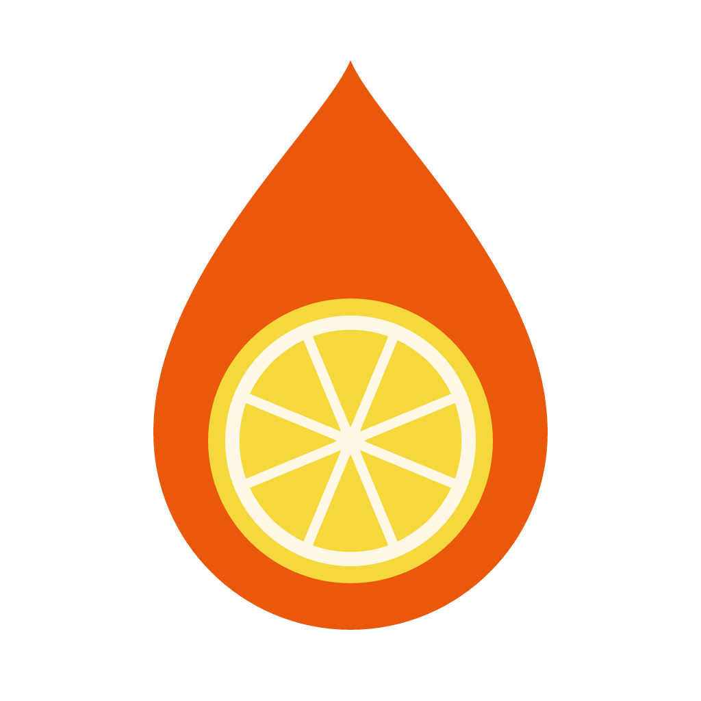
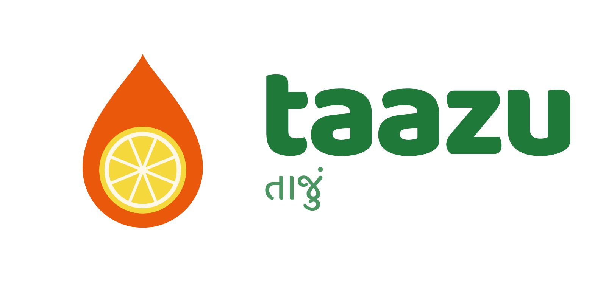
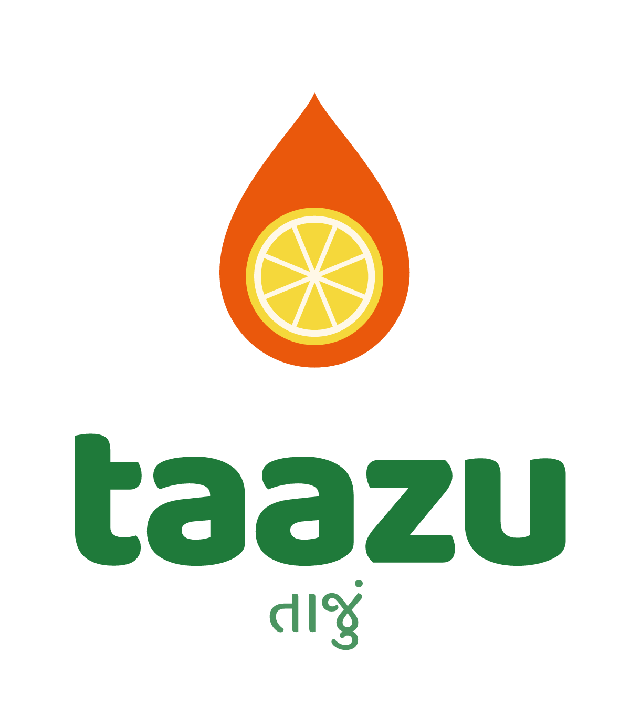
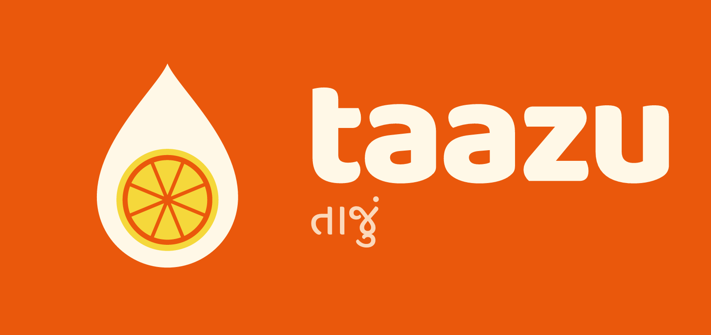

A · Nimbu Drop
Recommended primary
Bina naam · icon

Naam ke saath · horizontal

Stacked · label front, standee

Reverse · orange ya dark background
IdeaPaani ki boond ke andar nimbu slice. Drink aur nimbu ek nazar mein samajh aata hai.
Best forLabel, bottle cap, WhatsApp DP, standee. 12 mm par bhi saaf dikhta hai.
Kyun primaryApp aur label prototype ke colours se already match karta hai. Koi naya system nahi banana padega.